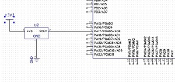
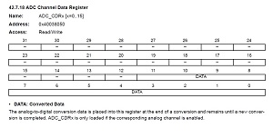
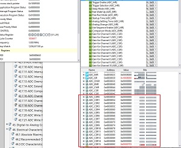

The ADC on the ATSAM4S has 16 channels with 12 bits of resolution. The ADC clock can be configured by an 8 bit prescaler(fcpu/2 if prescaler=0 and fcpu/512 if prescaler = 255). Check page 1172 in the datasheet clock frequency parameters. Unlike the AVR and XMEGA, the SAM4S does not have an internal voltage reference and we must connect the ADVREF pin to a voltage source.
The PIO controller setup is a bit different for the ADC compared to the other peripherals. For other peripherals we disable the PIO for the pins we want to use by setting bits in the REG_PIA_PDR. For the ADC, we set bits in the REG_ADC_CHER - adc channel enable register. When a bit for a corresponding pin is set that adc channel is enabled, pio disabled on the corresponding pin, auto configured to input, pull up enabled and connected to ground.
*note* Every time you change the input voltage reference on the ADVREF, a one time autoconfiguration should be run.
In the first example we will connect the output of an external temperature sensor to ADC channel 0, which is on PA17.

To enable channels, set the appropriate bits in the REG_ADC_CHER register.
There are two interrupts that can be used to trigger an end of conversion event. EOC (end of conversion) or DRDY (data ready). Both bits can be set in the REG_ADC_IER register. To clear the EOC interrupt flag in the REG_ADC_ISR the REG_ADC_CDRx (channel data register) needs to be read. To clear the DRDY interrupt flag the REG_ADC_LCDR (last converted data register) needs to be read.
After starting a conversion by setting the start bit in the REG_ADC_CR the ADC will convert the data and trigger an interrupt when finished.
*note* On page 1117 it shows the ADC Channel Data Register (REG_ADC_CDRx)

It seems like you can read the registers in as REG_ADC_CDR0, REG_ADC_CDR1, ... , REG_ADC_CDR15, but if you look at the definitions in adc.h you can only find REG_ADC_CDR which is set to the address 0x40038050 which is channel0. We have to make our own definitions to read the other registers.
Here is a list of the registers and addresses for REG_ADC_CDRx:

So, if we want to read the value of REG_ADC_CDR15 (channel data register 15) then in our setup we can define this as:
#define REG_ADC_CDR15 (*(__I uint32_t*)0x4003808CU)
We will attach a temperature sensor to channel0 and read the voltage output from our sensor to get the room temperature.
12 bit Resolution/advref voltage = adc reading/voltage 4095/3300 = 266/voltage voltage = 214mv
For this particular sensor, it output 10mv for every degree C. That means it's 21.4 C in this room.
#include "sam.h" #include "basic_uart.h" void clock_init(){ REG_CKGR_MOR |= CKGR_MOR_KEY_PASSWD | CKGR_MOR_MOSCXTEN; while (!(REG_PMC_SR & PMC_SR_MOSCXTS)); REG_CKGR_MOR |= CKGR_MOR_KEY_PASSWD | CKGR_MOR_MOSCSEL; REG_PMC_MCKR |= MC_MCKR_CSS_MAIN_CLK; while (!(REG_PMC_SR & PMC_SR_MCKRDY)); REG_PMC_MCKR |= PMC_MCKR_PRES_CLK_1; while (!(REG_PMC_SR & PMC_SR_MCKRDY)); } void ADC_init(){ /*enabling the channel automatically gives peripheral control of the pin instead of the PIO automatically configures pin to input, pull up enabled and connect to ground*/ //enable ADC channel0 REG_ADC_CHER |= ADC_CHER_CH0; //set ADC clock to 1mhz /*datasheet page 1172 for clock 500khz to 1mhz set ADC_ACR IBCTL = 01 */ REG_ADC_ACR |= ADC_ACR_IBCTL(1); /*clock prescaler = (fcpu / (2*adc_freq)) - 1 20,000,000 / (2*1000000) - 1 = 9 */ REG_ADC_MR |= ADC_MR_PRESCAL(9); //Enable ADC interrupts for end of conversion REG_ADC_IER |= ADC_IER_EOC0; //Need to just run once. If you change the voltage on ADVREF you need to run again //ADC software reset //REG_ADC_CR |= ADC_CR_SWRST; //autocalibration //REG_ADC_CR |= ADC_CR_AUTOCAL; } int main(void) { /* Initialize the SAM system */ SystemInit(); clock_init(); UART_Init(); //enable clock for ADC REG_PMC_PCER0|= PMC_PCER0_PID29; //enable ADC interrupts NVIC_EnableIRQ(ADC_IRQn); ADC_init(); //start a conversion REG_ADC_CR |= ADC_CR_START; while (1) { } } //when ADC conversion is complete it will trigger an interrupt and interrupt will end by starting a new conversion void ADC_Handler( void) { //read interrupt flag status register uint32_t status = REG_ADC_ISR; uint32_t adcData; if ((status & ADC_IMR_EOC15) > 0){ //reading this register clears flag in ISR adcData = REG_ADC_CDR; printString("Sensor Output: "); printWord(adcData); printString("\r\n"); } //start the next conversion REG_ADC_CR |= ADC_CR_START; }
Channel 15 is an internal temperature sensor that give a linear output of 4.7mv/degree C. There is an offset that needs to be calibrated. Information on the temperature sensor can be found in the datasheet on page 1183. In addition to enabling chanel 15 the programmer must also enable the temperature sensor by setting the TSON bit in the REG_ADC_ACR register.
#include "sam.h" #include "basic_uart.h" void clock_init(){ REG_CKGR_MOR |= CKGR_MOR_KEY_PASSWD | CKGR_MOR_MOSCXTEN; while (!(REG_PMC_SR & PMC_SR_MOSCXTS)); REG_CKGR_MOR |= CKGR_MOR_KEY_PASSWD | CKGR_MOR_MOSCSEL; REG_PMC_MCKR |= MC_MCKR_CSS_MAIN_CLK; while (!(REG_PMC_SR & PMC_SR_MCKRDY)); REG_PMC_MCKR |= PMC_MCKR_PRES_CLK_1; while (!(REG_PMC_SR & PMC_SR_MCKRDY)); } void ADC_init(){ /*enabling the channel automatically gives peripheral control of the pin instead of the PIO automatically configures pin to input, pull up enabled and connect to ground*/ //enable ADC channel15 (internal temperature sensor) REG_ADC_CHER |= ADC_CHER_CH15; //enable internal temperature sensor REG_ADC_ACR |= ADC_ACR_TSON; //set ADC clock to 1mhz /*datasheet page 1172 for clock 500khz to 1mhz set ADC_ACR IBCTL = 01 */ REG_ADC_ACR |= ADC_ACR_IBCTL(1); /*clock prescaler = (fcpu / (2*adc_freq)) - 1 20,000,000 / (2*1000000) - 1 = 9 */ REG_ADC_MR |= ADC_MR_PRESCAL(9); //Enable ADC interrupts for end of conversion REG_ADC_IER |= ADC_IER_EOC15; //Need to just run once. If you change the voltage on ADVREF you need to run again //ADC software reset //REG_ADC_CR |= ADC_CR_SWRST; //autocalibration //REG_ADC_CR |= ADC_CR_AUTOCAL; } #define REG_ADC_CDR15 (*(__I uint32_t*)0x4003808CU) /**< \brief (ADC) Channel Data Register */ int main(void) { /* Initialize the SAM system */ SystemInit(); clock_init(); UART_Init(); //enable clock for ADC REG_PMC_PCER0 |= PMC_PCER0_PID29; //enable ADC interrupts NVIC_EnableIRQ(ADC_IRQn); ADC_init(); //start a conversion REG_ADC_CR |= ADC_CR_START; while (1) { } } //when ADC conversion is complete it will trigger an interrupt and interrupt will end by starting a new conversion void ADC_Handler( void) { //read interrupt flag status register uint32_t status = REG_ADC_ISR; uint32_t adcData; if ((status & ADC_IMR_EOC15) > 0){ //reading this register clears flag in ISR adcData = REG_ADC_CDR15; printString("Sensor Output: "); printWord(adcData); printString("\r\n"); } REG_ADC_CR |= ADC_CR_START; }
{kind=link}
{kind=link}
{kind=link}